萬佛寺/台中縣霧峰郷
台湾大佛列伝3、最後の訪問地は台中縣にある萬佛寺である。
ここは8年前に訪れたことがある（当時の様子はこちら）
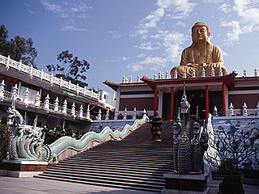
撮影；1999年1月
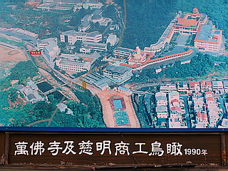
この年の9月21日、921大地震が起こり、台湾中部～台北で多くの被害を出した。
特に震源地の南投縣と隣接する台中縣の被害は甚大で、当時のニュース映像を見てビックリした記憶がある。
それは大仏さんが傾いている映像であった。
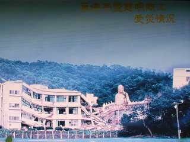
わずか数ヶ月前に訪れた大仏がななめっているではないか！
世をあまねく照らすはずの大仏さんが壊滅状態。大仏舎弟を自負する私にとってこれほどショッキングな映像はなかった。
一体この先どうなるんだろう…また、大仏を再建してくれるのだろうか…
心の片隅でいつも気にしながらも数年が過ぎた。
震災の翌年も訪台の機会はあったが、その時は南部の訪問がメインでここには訪問できなかった。
その後、萬佛寺の事もボチボチ忘れかけていた頃に萬佛寺が凄いことになっている、との報を受けての訪台と相成ったわけなのだ。
さて、前置きが長くなってしまった。
生まれ変わったニュー萬佛寺へ歩を進めようではないか。
8年前と同じ道を辿っていくと萬佛心世界という看板が見えてくる。
その様相は以前のものとはまるで違っていた。
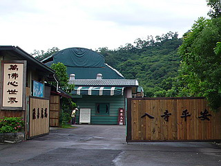
以前建っていた大仏殿、大雄宝殿をはじめとした建物がすっかりなくなっており、そのかわりにテント張りのような仮設の建物が建っていた。
とてもお寺とは思えない眺め。どちらかというと移動式のサーカスやイベント会場みたいだ。
勿論、かつてそびえていた大仏など影も形もなくなっている。
大地震後、暫定的に復興した萬佛寺の悲しすぎる姿だった。
安い材料で急場しのぎで造られたような建物の入口には佛光隧道buddha light tunnelと書かれている。
むむむ。
我々が朝一番客だったようで、掃除のおばさんがドアを開けてくれた。
そして屋内のスイッチを入れるといきなり奥のほうからガタガタガタガタ…と怪しげなラップ音が轟いてきた。
入口には「歓迎進入 佛光隧道 帯您探索 心霊世界」とある。
えっ…心霊？…もしかしてお化け屋敷みたいなとこか？それとものっけから地獄巡り？
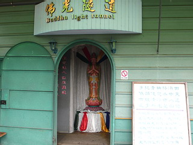
恐る恐る先に進む。
ちなみにワタシ、地獄巡りは大好きなんだけど、お化け屋敷は苦手なんです…
すると突然巨大な目玉が登場。
何だ？何だ？
浮かび上がる梵字。一体この俺にどうしろと？
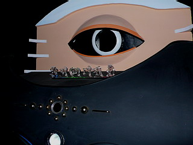
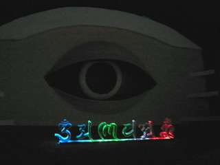
意味もわからず左右夕焼けな通路を通過する。
窓の外の風景はハメコミです。
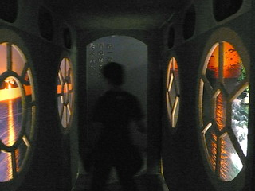
ちなみにまだお化け屋敷の可能性も否定できないので、危険を回避すべく愚息を尖兵として差し向けてみました…
ここ数日間、関帝廟などを参拝していたのですっかり軍師としての才覚が芽生えちゃって芽生えちゃって。
関平、五百の兵を授ける！ってなモンですわ。
通路を出ると壁一杯の鼻。
これはもしかして…三保の人体科学博物館みたいなモンか？
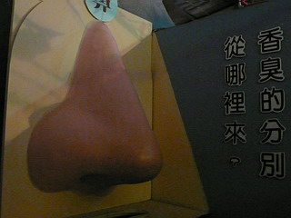
お寺で巨大な鼻が登場する唐突さに面食らいながらも、この先お化け屋敷はないと判断し、少しホッとしたりして。
一応、鼻の横に書かれているコメントは「臭いと香りの違いはどこで別れるか？」みたいな内容です。
それは科学的な質問なのか、哲学的な質問なのか、ニュアンスが全くわかりません。
で、お次は舌。
これもまた人の背丈位はありそうな大きさ。
書かれているコメントの意味は判らないが、舌は甜酸辣渋苦の五味を感じるということをわざわざ教えてくれているようだ…
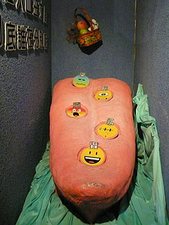
で、次は身体。
奥に書かれているコメントをヤフー翻訳にぶち込むと「あなたの身体はこれが影響したことに接触するか？」…
翻訳ソフトが頭悪いのか、書いてる人が頭悪いのか、読んでる私が頭悪いのか、のいずれかだとは思うのだが意味が全くわからん。
少なくとも朝青龍はこの先に行けないことだけは身をもって了解しました。
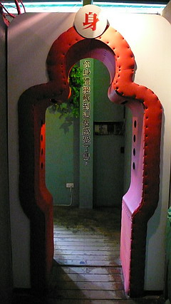
お次は「意」とある。
むむむ。段々仏教哲学の真髄に近づきつつあるんだろうか…
お化け屋敷でないことだけは判ったが判ったのはそれ位。
一体何を言わんとしているのか一向に判断出来ない。
久々に精神的な立ち位置が一切判らないトコロに来ちゃったなあ～。
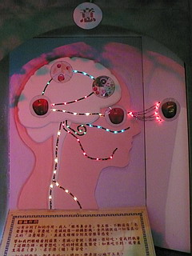
下に細々と説明が書かれていたが、ざ～っと読むと、どうやら今までの目鼻舌身で感じた五感（あ、耳はなかったけど）を総合してどうのこうの…みたいな話のようで。要は五感を脳が司る…みたいなことだったような…気が…します。
ハイ！結局、何を言いたかったのか…まったくわかりませんでした!!
最大限好意的な見方をすればきっと仏教における身体と意識の関係を模型を使って超判り易く説明してくれたんだ…
と思うことに決めました。
まあ、見た目面白かったから意味なんて判らなくても別にいいんですけど。
さらに進むとプレハブの屋内なのに何故か植木（造花）。で何故か岩壁（ポリ）。何故か滝（雨漏り？）。
そうは見えないが、心なしかジャングルっぽい風景を一生懸命演出しているのでは？
って、手？！
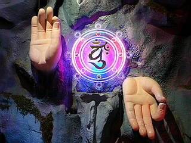
お化け屋敷ではないと判定したものの、いきなり壁の中から人がウワッ！と飛び出してこないとも限らないので、油断は禁物だ。
先程からの断片化した身体のパーツを展示しているのはもしかして震災で解体されてしまったであろう大仏さんへのオマージュだったりするのだろうか？だとしたらあまりにも悲しい、そしてハイブローすぎる展示だ、としかいいようがない。
ある意味、お化け屋敷より厳しい展示だったぞ。
で、脳酸欠に陥りつつも二階へ。佛光勝境となっている。
また、訳のわかんない展示が続くんだろうか…
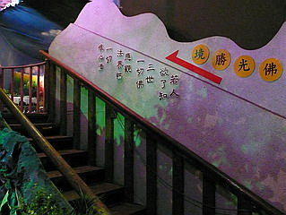
と、思ったらオー！ワンダフル！
仏様がズラリと並んでいるではないか！
おお、ビバ！仏教！
これ程、仏サマに救われた気分になったことはないぞ！
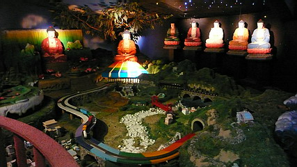
俗世の先にある華麗なる仏陀一族。
それは宇宙の果てではなく、我々が住む地上の近くにあるんだよ。という事を言いたいのだろう。
いや、別に何も考えずにノリで作ったのかもしんないですけど。
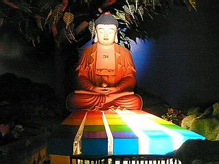
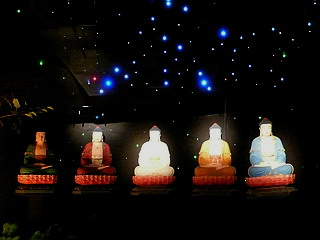
しかし。
よく見ると手前の俗世間は…鉄道模型じゃないすか…
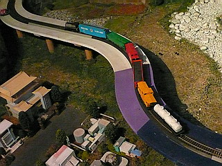
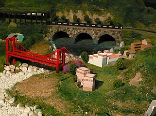
しかも建物や橋、トンネルなどちゃあんと作り込んであるぞ。
本チャンの鉄ちゃんが作ったのだろうか。Ｎゲージのジオラマとしてはかなりの大作である。
思わず関心しちゃいました。
隣には薄暗い中に仏サマがポツンと。鉄道がグルグル回ってにぎやかなお隣に比べたら寂しい雰囲気だ。
これももしかしたら彼岸の世界に自ら逝ってしまった大仏さんや仏殿へのオマージュだったりするのだろうか…
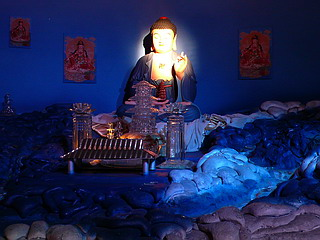
で、お次は地獄。
立体地獄は規模が小さく、亡者が切られたり振りまわされたり煮られたり潰されたり…といったシーンは少ない。
電動部も少なく精々光が点滅したり小さい人形がグルグルまわったりする程度。
とても電動地獄と呼べるシロモノではなかった。でもいいんです。アタシにとっちゃ極楽みたいなモンですから。
数々の伝説的な台湾の電動地獄を見てきた身としてはもっとガンガンやって欲しいのだが、まあ、急ごしらえの施設だからいたしかたあるまい。
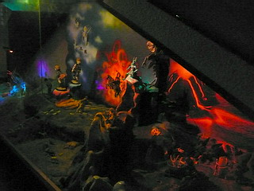
とはいえ、そこは地獄先進国台湾。
キッチリ見せ場は作ってくれてます。
食玩のおまけみたいな怪獣に責められる八寒地獄や八熱地獄。
しかも責められてる亡者は皆めっちゃ紙粘土。
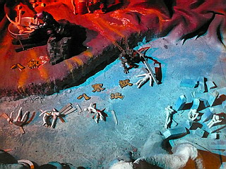
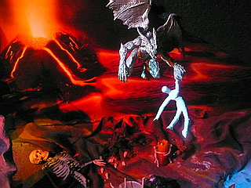
餓鬼道の餓鬼はロードオブザリングのゴラムですね…指輪探しにこんなとこまで。
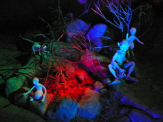
人道。
何故か真ん中でクルクル回るローラースケートを付けた金髪男女。
そこから放射状に伸びる足跡は人生の選択肢を象徴しているのだろうか。
右に行けば地獄、奥に行けば阿修羅道左に行けば餓鬼道。人生の選択はいつも辛いものである。
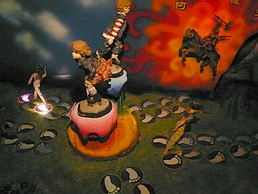
ミニ地獄巡りの次は震災で崩れた大仏殿のパネルが。
手前には家具のおもちゃが無造作に転がっている。
一歩間違えれば「タカシ（仮名）！ちゃんと片付けなさいっていつもいってるでしょ！」とのママの声が聞こえてきそう…
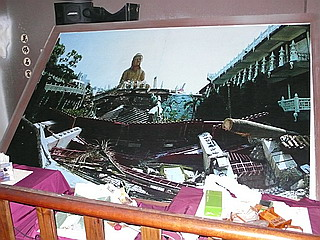
などと思っているといきなり照明が暗転。と同時に床がガタガタガタガタ！…と揺れだした。
ひゃ～、地震の再現かあ～！ビックリしたぞ。
そういえばさっきからガタガタ鳴ってたのはコレだったのか。いい趣味してるな～。
（ガタガタ…の様子はこちら。再生にはQuickTimePlayerが必要です）
さらに先へ進む。
布を張り巡らし洞窟っぽく仕上げた部屋。
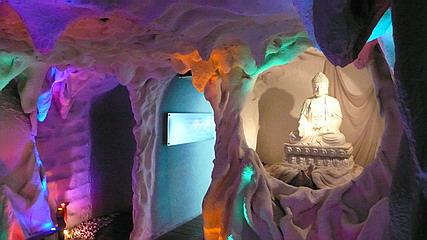
段々、ショボくなっていくような気が…
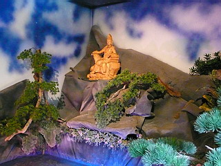
お次は紙をクシャクシャにして張り巡らしてある。
この高校の文化祭みたいな飾りつけは何だ？
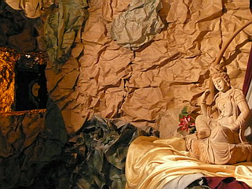
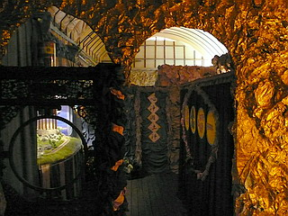
何とかデコレートしてスペクタクル感出していこうよ！という意気込みは痛いほど感じるんですけど…
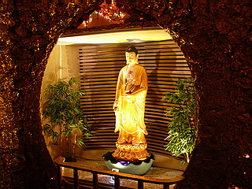
二十五菩薩来迎図フィーチャリングＮゲージ！
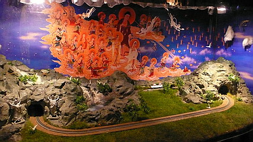
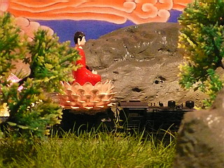
汽車ポッポには仏サマが乗車しておられましたよ。
素晴らしいファンキーブッダソウルトレインだがトンネル通過の際は頭上に御注意くださいね。
足元の電飾もどこか地方都市の場末のネオン街を思わせ、一抹の寂しささえ感じてしまう。
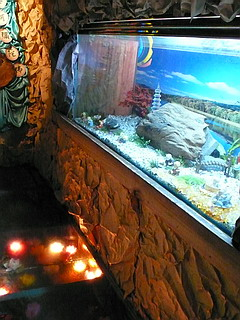
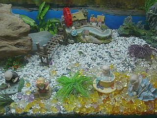
水槽のようなガラスケースの中には百円ショップで売れ残った品を50円で買い叩いてきたようなグッズがずらり。
安い！安すぎるぞ。
悲しいまでのチープ加減。でも仕方がないんだよ、仮設寺院なんだから。
涙ぐましい努力じゃないか。
最後に007のオープニングみたいな寝釈迦。
コレはカッコ良かったです。
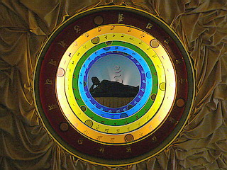
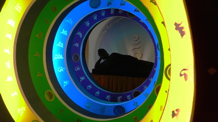
そんなこんなでめくるめく佛光隧道の探索は終了。
この安い素材でよくココまで頑張った！
佛光隧道を出るとそこは本尊の三尊仏があるから大雄宝殿、ということになるのだろう。
本尊サマはテント暮らし。
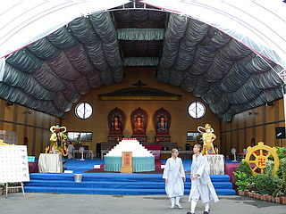
勿論、功徳箱に普段より多目の寄進をさせてもらった。餓鬼道の餓鬼にフィギュアを使わないで済みますように…
大願劇場なる看板があったのでふらふらと入ってみた。
これといって劇場といえるモノはなかったが
「善心護持 功徳無量」～善き心を持って功徳をいっぱいしましょう、ということなのだろう。つまりお寺再建のためにジャンジャン寄進をよろしく、という意味のことを仏教的な言い回しで表現している、と解していいのかな？
一瞬、功徳無料なのかと勘違いしちゃいました。
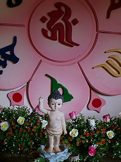
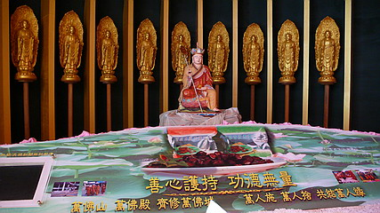
さて、またしても手作り感ムンムンの小屋が。
入口には春夏秋冬とある。
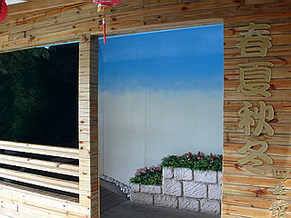
中に入ると再び大脱力。
壁に貼られた写真。何とか華やいだ雰囲気を醸し出そうと必死な造花。この建物では雨漏りとも間違えられかねない打たせ湯みたいな人口滝。ミニチュア、ニセモノ、写真…落ちてくる水以外何ひとつとしてホンモノのない自然の景観。
そんなつくりモノの春夏秋冬を巡る旅に何を会得すればいいのだろう…
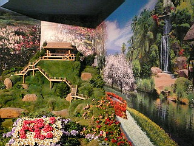
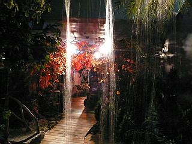
こんな安っぽいの作るんなら、最初っから何も作らなきゃいいじゃん、という声も上がるかもしれないが、私はその考え方には反対である。
どんなに金がなかろうが力がなかろうがパラダイスを創り上げる、いや、創らなきゃならない。
傍から見たら何でそこまで、と思えるほどの不必要なまでのアッチッチな情熱にこそ珍寺の本質が隠されているような気がするのだ。
解脱門。ここを潜れば不信心なワタシも解脱出来たりするんでしょうか…
でも門の中はガラクタが積まれていたんですけど。解脱できます？
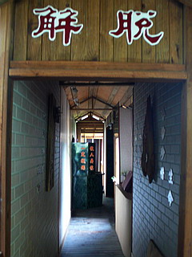
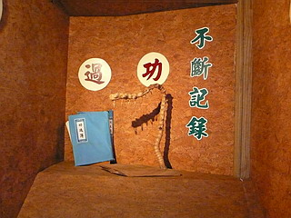
ガラクタに混ざって何故かファイルがポツンと置いてある。ファイルのタイトルは功過簿。
不断記録、つまり今までの善行と悪行が記されているということですか…
この謎のファイルを見て解脱せよ、とアナタはおっしゃるのですね！無理です！
まあ、こんな感じで萬佛寺の萬佛心世界一周は完了。
胎内から十界、果ては季節までをも巡る、スケールだけは大きな擬似旅行だった。
十界巡りといえばこんな素敵な看板も。
人生ゲームのルーレットみたくコレを回して今後の行く末を決めるのかと思い、触ってみたがビクともしませんでした…
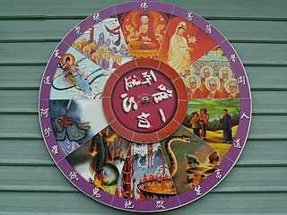
庭にあった造花で出来た仏サマ。
まつ毛が人工芝だったり髪と顔と体の材質を変えてあったりと意外と芸が細かい。
浄土に旅立たれた大仏さんのせめてものよすがに。
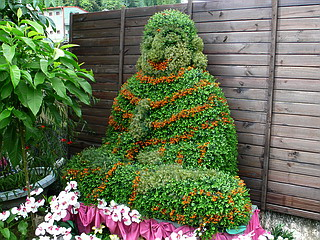
弥勒サマが見下ろす萬佛寺全景。
56億7000万年後までには大仏さんは復興しているのだろうか…
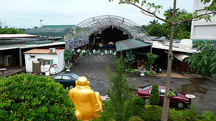
少し離れたところに萬佛寺大殿なるプレハブの建築群があった。
こちらは僧院のようなところで皆さん食事の準備をしていた。
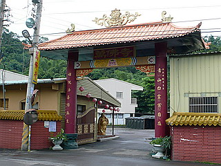
仮設だろうがチープだろうが、理屈や概念だけで語らずにあくまでもモノで世界観を提示する。
それが珍寺への第一歩であることをこの寺で学んだような気がする。
（情報提供；サマサマ太郎さん）
最後におまけ
台湾大佛列伝3
珍寺大道場 HOME